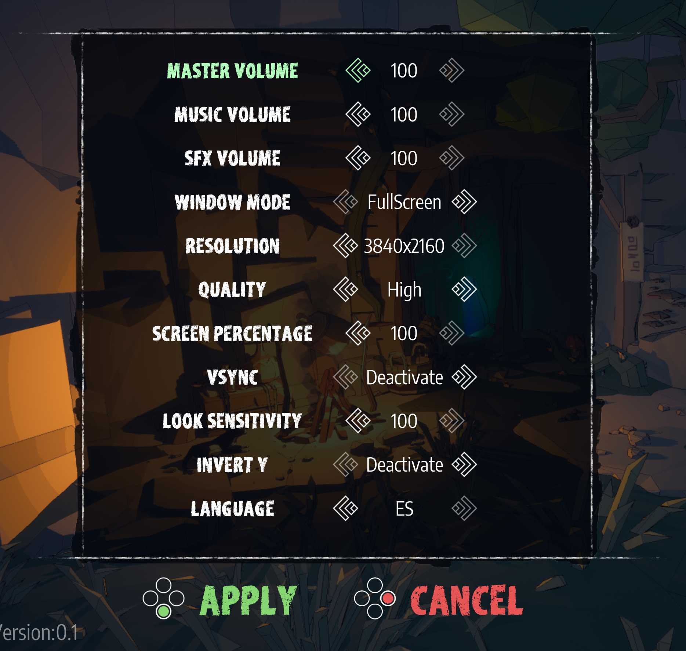
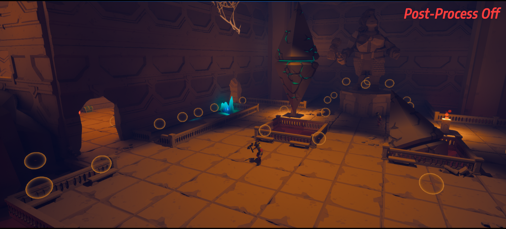
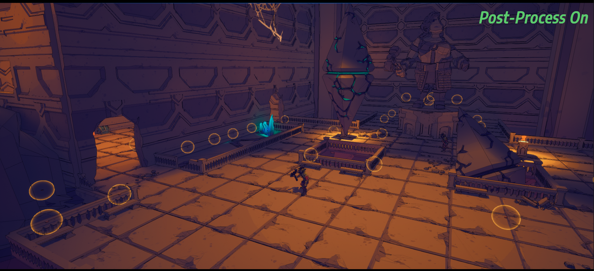

Project information
- Category: Hack & Slash Multiplayer
- Engine: Unreal Engine 5
- Project date: October, 2024
- Steam: Link
About the game
Adventures in dungeons slashing, exploding and kicking around you in order to unveil their mysteries. What more could you ask for to have a good time smashing buttons? Well, being able to do it with your friends is a good point!
Most Important Implementations
Network Programming:
Since we didn't have the resources to use a dedicated server from the start, we knew one of the players would have to act as the server, with the others connecting as clients. To achieve this, we utilized Steam's API, which allows users to create
and find sessions, and even join sessions through their friends list. This tool streamlined the process and enabled us to focus on ensuring the session functioned correctly.
Once the users were connected as client and server (with one acting as the server and the rest as clients), we used Unreal's replication system to manage various aspects of the elements—some straightforward, like their positions, and others more complex.
A key decision was to handle all collisions exclusively on the server to maintain a cohesive base state. This ensures a 'true' version of events, allowing the rest of the system to adjust and synchronize accordingly. Other properties had to be
categorized based on their importance. Critical properties are almost always better calculated on the server to ensure accuracy, while non-critical ones should, whenever possible, be handled by the client. This approach reduces reliance on communication
speed and eases the server's workload.
This is, of course, an oversimplification of the process, ignoring aspects such as determining the type of call to make (to the client, server, or all) or assigning ownership to identify the server. The latter can be particularly problematic since anything placed in the map by default at build time doesn’t know who the server is and, therefore, cannot make a call to it.
To address this issue with collectables (which are pre-placed on the map by the designer), we implemented a small intelligent assignment system. After a short delay (since any assignment requiring communication is not instantaneous), we verified if the assignment was successful, enabling the corresponding call to be made.
This is just one of the many challenges we faced during development. As these systems depend on communication, testing and debugging such errors can be cumbersome or even nearly impossible at times. The best approach is to rely on a deep understanding of how the system functions to identify and resolve issues effectively.
Menus & UI:
The integration of Unreal's basic UI with controller inputs can often be lacking, significantly limiting how it interacts with different controller buttons. This frequently results in losing focus and creating confusing navigation for unclear reasons. With this in mind, I decided to create an intermediate interface to manage the necessary input, starting with the options menu.

To ensure the functionality of this menu, I created two interface types: one that acts as a slider with a value range from one to one hundred, and another that allows configuration of multiple options, in this case set directly through code.
This new UI provides full control using a gamepad, keyboard, and mouse while behaving intuitively and maintaining focus (with navigation manually configured to avoid errors). Additionally, the parent widget manages part of the
input and focus to ensure everything works correctly.
In the lobby, navigating with a gamepad was one of our biggest challenges. With so many options, moving between them became tedious, and combined with Unreal's usual issues, it was clear we needed a new menu approach. Ultimately, we
decided to eliminate the need to scroll through options altogether, as it only hindered and slowed down usability. Instead, we mapped all the options to different buttons and managed the input from the main widget. By displaying icons
that indicated the required input, the lobby became fast and intuitive to use.

Post-Process:
To give the project a distinct visual identity and emphasize the low-poly style of the models, I began creating a stylized post-processing effect. Developing this was more complex than I initially expected, as we wanted to retain Lumen's dynamic lighting, which conflicted with the hard shadows typically used in a cartoon style. We found the desired look by blending a traditional stylized approach (derived from the scene's luminosity) with Lumen's output, achieving a unique visual balance.
 
This stylized effect also blends the final output with the unlit texture color to add a touch of 'simplicity' and enhance brightness. Finally, an outline is applied to make all the elements stand out. I believe the final result is something we can
truly be proud of.